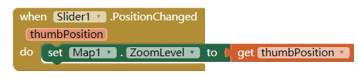

1)How are lists used in this app? Why is a list a useful data abstraction or an abstract data type (ADT) in programming? Is it easy to add new destinations to the tour?
The lists is use to make 2 differents text to the variable.List is a useful data abstraction or an abstract data type (ADT) in programming because it can make a variable to contain two or more different value.It's easy to add new destinations to the tour.
2)How do APIs simplify complex programming tasks? Pick an app that you use on your device (e.g. Twitter, Google Maps) and see whether it provides an API and some of the functions you can control with it. Describe your results below.
APIs simplify complex programming tasks by connecting different programs together.In twitter,you can insert a website in your tweet,and when you click on it,it will run the website in the app,and you can choose to use google chrome to open it.
3)How is GPS used in this app? Do some research to find out how GPS works and describe it here in a couple sentences.
Gps is used to determine your location.Gps works by you use your phone to connect to internet,then send out a message to the satellites to calculate you how far away you are.And it works by sending message to 4 or more satellites.
4)Insert screenshots of the enhancements that you made below and describe how they work.

With this code,I made the map zoom in or out when I change the slider position.For the "When slider position changed do" is the code to execute the following code "set map zoom level" to "get thumb position".With "set map zoom level" to "get thumb position",it make the map zoom level to the slider value.